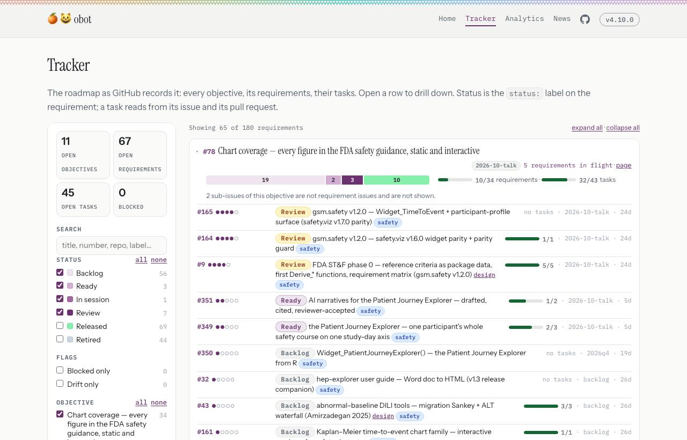
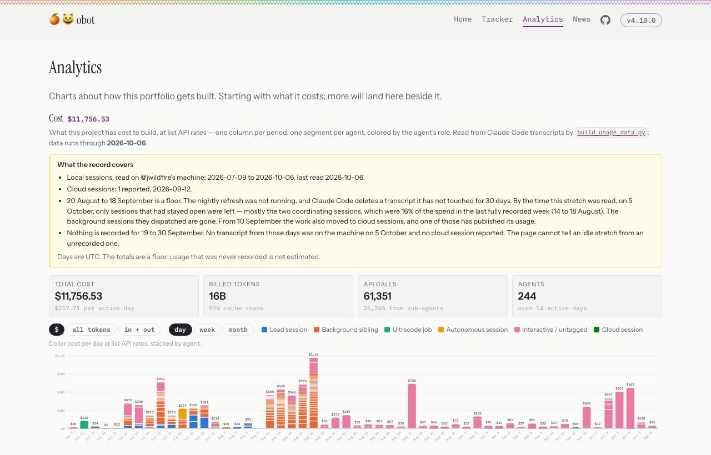

Two releases that go together. One is the skill a session runs; the other is the standards it runs under and the site that reports on it. Most of what is new has no page to look at, so each section pairs the change with real output from this machine and the command that produced it. Where the change is a fix, the old behaviour is captured beside the new one.
v0.5.0 moved sessions to the cloud, where a session acts as the account that connected it. That account is @jwildfire's, and it is admin on every repository in the program. On 2026-10-07 he parked cloud sessions: "we can probably just park cloud support for now and i'll just do local here or on the agent laptop". A session now starts from his workspace, on his own machines, and every issue, comment, commit, push, pull request and merge of an increment goes out as obotclaw[bot].
What the two releases ship is the description: obot.agent's skill, AGENTS.md and README, and the hub's developer guidelines, ways of working and AGENTS.md. The token and the guard that enforce it are tooling of his workspace and are in no repository, by his choice. The captures below are that guard, so the claim in the documents can be seen holding.
$ gh issue comment 12 -R jwildfire/safety.viz --body hello github-write-guard: this is a `gh issue`/`gh pr` write, and with no token set it runs as @jwildfire, so GitHub records him doing it. Write as obotclaw[bot], in the one form that stops when the mint fails: T=$(<workspace>/bin/obot-app-token) GH_TOKEN=${T:?} gh <the same args> Both lines go in the same Bash call; shell variables do not carry over to the next one. If the write has to carry @jwildfire's name, do not run it: give him the command in a bash block and he runs it himself.
The form matters. The first line asks for a bot token; the second hands it to gh. Handed an empty token, gh quietly uses the stored login, so a failed request used to produce a write under his name that looked like a success. ${T:?} is the shell's way of saying "stop here if T is empty".
$ GH_TOKEN=${T:?} gh pr review 9 -R jwildfire/safety.viz --approve github-write-guard: this approves a pull request. Approval is @jwildfire's review, given on GitHub, and it is the gate on every release branch. Stop and tell @jwildfire what you wanted to do and why. If he agrees, he runs it himself; a session never does, with any token.
The other two are merging past a ruleset and changing a ruleset or a branch protection. The guard has 53 cases, each a command it must refuse or leave alone:
ok deny ambient pr create ok deny one-line substitution ok deny approve, as the bot ok deny ruleset edit ok allow two lines ok allow issue view ok allow prose in a heredoc 53 cases, 0 failed
git push, and a session set on getting round it could. The walls are GitHub's: the branch rulesets, and the bot's narrow permissions.Read the Identity section of each AGENTS.md: https://github.com/jwildfire/obot.agent/blob/main/AGENTS.md#identity-and-attribution https://github.com/jwildfire/obot.roadmap/blob/main/AGENTS.md#identity On the workspace machine: bin/test-guard -v On GitHub: every issue and pull request opened for these releases on 2026-10-07 was opened by obotclaw[bot]. The earlier ones linked here, such as the tracker's pull request, predate the decision and were opened by @jwildfire.
@jwildfire, 2026-10-06, on two sets of notes that ran to 2,088 and 1,754 words: "Release notes are way too wordy. … The details go in the demo page." The release-notes skill gives the shape, taken from safety.viz v1.9.1, and its checker fails a section over 600 words, a feature bullet over 70, or a section that does not open with its demo link. These two releases' own notes are the first written under it.
$ node obot.agent/skills/release-notes/check-notes.mjs obot.agent/NEWS.md obot.agent v0.6.0 (Upcoming): 375 words (limit 600) The notes are within every limit. $ node obot.agent/skills/release-notes/check-notes.mjs obot.roadmap/NEWS.md obot.roadmap v0.5 (Upcoming): 411 words (limit 600) The notes are within every limit.
The security review found that a bullet ending in about twenty issue links and one more word sent the word counter into a search that did not finish. The checker runs on text other people wrote, so one line in a NEWS file could stall a session. The same file, before and after:
$ node check-notes.mjs hostile.md still running after 5.00 s; stopped
$ node check-notes.mjs hostile.md pkg v1.0.0 (Upcoming): 53 words (limit 600) returned in 0.02 s, exit 0
Every line of the current NEWS files of five repositories, 861 lines, is counted the same by the old and the new counter.
A section still being written is often a list with no headings. The checker totalled such a section by its first bullet alone. It failed the section anyway, for having no demo line, so nothing passed that should not have; the number was wrong.
obot.agent v0.6.0 (Upcoming): 46 words (limit 600)
obot.agent v0.6.0 (Upcoming): 246 words (limit 600)
cd obot.agent && node --test skills/release-notes/check-notes.test.mjs # 11 tests, 11 pass node skills/release-notes/check-notes.mjs NEWS.md
The gate used to be ultrareview, which only a person can launch, so an unattended session could never pass it (@jwildfire, 2026-10-03). The session now spawns three read-only reviewers: one for correctness, one for the definition of done and its proof, one for the program's hard rules. Each gets the diff, the pull request's body and the issues it closes, and none of the session's own conclusions. The session checks every finding against the code, fixes it or says why it does not apply, and posts the review and its resolution as one comment. Only then is the candidate marked ready.
The obot.agent v0.6.0 release candidate carries its own review comment: https://github.com/jwildfire/obot.agent/pulls?q=is%3Apr+base%3Astable+v0.6.0 The rule: https://github.com/jwildfire/obot.roadmap/blob/main/docs/developer-guidelines.md#releases
scripts/github-flows.sh check is how anyone confirms that the branch rules are still in force on the nine repositories. Two faults, both found by the review and both reproduced with a stand-in for gh that changes one answer and passes the rest through. When GitHub did not return a ruleset, the comparison had nothing to compare, and nothing read as a match. And it never looked at who may bypass a ruleset, which is the one entry that makes every other rule optional.
$ scripts/github-flows.sh check safety.viz safety.viz: matches exit=0
$ scripts/github-flows.sh check safety.viz safety.viz: drift — could not read ruleset 'integration: checks and auto-merge'; could not read ruleset 'release: review required' exit=1
$ scripts/github-flows.sh check safety.viz safety.viz: matches exit=0
$ scripts/github-flows.sh check safety.viz safety.viz: drift — ruleset 'integration: checks and auto-merge' differs (bypass allowed for RepositoryRole 5); ruleset 'release: review required' differs (bypass allowed for RepositoryRole 5) exit=1
"RepositoryRole 5" is GitHub's own name for the repository's admin role, which is the entry the stand-in added.
GitHub shows a ruleset's bypass list only to an account with admin. Run with the bot's token, the check says "bypass list not shown to this account" and exits 1, where a pass would have been a pass on a field nobody read. Against GitHub as it stands, run as @jwildfire, it prints "matches" for all nine.
cd obot.roadmap && bash scripts/github-flows.sh check # reads only; nine lines, each "matches"
The hub's main takes direct pushes, and a push runs the deploy. Three things in that workflow turned a push into more than a site build, and each is changed.
npm install, R, the status dashboard and its packages. Those six steps now run with the workflow's own token, which reads this repository and nothing else.steps that set GITHUB_TOKEN to the workflow's own token: Install renderer dependency r-lib/actions/setup-pandoc@v2 r-lib/actions/setup-r@v2 Install gh.dash dependencies Install gh.dash Build package status dashboard $ grep -c 'OBOT_APP_PRIVATE_KEY\|RC_TOKEN' .github/workflows/deploy-site.yml 0 the renderer: npm install --no-save --ignore-scripts marked@18.1.0
The proof that the site still builds is the deploy itself: the run on the merge commit is green, its log reads "status: 7 repos rendered to _site/status/index.html", and the status page frames the dashboard, not its placeholder. The catalog now says of its to-do list: "Draft releases are not listed: a release candidate is a pull request."
main every night and ran what it found, under his account, to refresh the Cost chart. The job is unloaded, its script no longer hands control to the copy of itself it just fetched, and the page it fed is refreshed by hand.OBOT_APP_ID and OBOT_APP_PRIVATE_KEY, are no longer read by the deploy. Deleting them, and replacing the key they hold, is for @jwildfire: a session cannot and should not.One page shows the roadmap as GitHub records it: every objective, opened to its requirements and their tasks, with status on every row. The sidebar searches and filters by status, objective, area and milestone, and counts what is in each. The address carries the filter, so a view can be sent as a link. The nav is the four pages that get read: Home, Tracker, Analytics, News.

https://jwildfire.github.io/obot.roadmap/tracker.html 1. Untick Backlog in the sidebar. The count above the list drops and the address changes. 2. Copy the address into a new tab. The same view opens. 3. Open a requirement's row. Its tasks appear, each read from its issue and its pull request.
The chart had stopped on the last day the usage script was run by hand. It now runs through 6 October, and a panel above it says what the record covers and what it cannot see: the days each store runs through, a stretch in August and September that is a floor because transcripts had already been deleted, and twelve days in September for which nothing was recorded at all. The totals are stated as a floor.

Two things about this page changed during the security review, and the release notes say so. Local usage is refreshed by hand, because the nightly job that did it is retired (section 06). And with cloud sessions parked, the green "Cloud session" series holds the one session that reported and will not grow.
https://jwildfire.github.io/obot.roadmap/analytics/index.html Switch day / week / month, and $ / all tokens. Read the panel before the bars.
main takes direct pushes, and most of its deploy still runs with a personal token. The steps that install outside code no longer do.